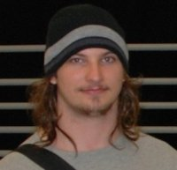
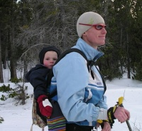
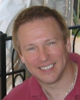
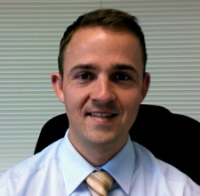

Conference Sessions
Chad Fowler - Keynote
Chad Fowler has been a software developer and manager for some of the world's largest corporations. He recently lived and worked in India, setting up and leading an offshore software development center. He is co-founder of Ruby Central, Inc., a non-profit corporation responsible for the annual International Ruby Conference and The International Rails Conference, and is a leading contributor in the Ruby community.
Chad is a contributor and editor for numerous books and is author of My Job Went to India (and all I got was this lousy book): 52 Ways to Save Your Job and Rails Recipes.
John Lam - RubyCLR and Ruby.NET
As dynamic languages gain popularity, it becomes more important to play well with others. There are a tremendous number of useful libraries that ship with the .NET platform that Ruby developers can use in their applications. RubyCLR is a bridge between the standard C-based implementation of the Ruby interpreter, and code that executes in the .NET Common Language Runtime. We will look at the design of RubyCLR to better understand how to implement a high-performance and high-fidelity interop layer between dynamic languages and statically typed libraries.
John Lam is a Program Manager on the Common Language Runtime team at Microsoft. He's the creator of RubyCLR, a high-performance bridge between Ruby and the .NET Common Language Runtime. He's bringing the love of Ruby out to the statically typed heathens at Microsoft and beyond.
Gregory Brown - Pragmatic Community Driven Development in Ruby
A talk about community driven software development and the tools, techniques, and practices necessary to build a successful free software project. The presentation will focus on how to get through the growing pains many Ruby projects inevitably experience, and help you put your project on the path to 1.0
Gregory Brown is the lead developer of Ruby Reports and an active member of the new_haven.rb and NYC.rb user groups.
Ara T. Howard - Ruby Queue
The Ruby Queue software package lowers the barriers scientists need to overcome in order to realize the power of Linux clusters. It provides an extremely simple, economic, and easy-to-understand tool that harnesses the power of many CPUs while simultaneously allowing researchers to shift their focus away from the mundane details of complicated distributed computing systems and back to the task of actually doing science. The toolset is designed with a K.I.S.S, research focused, philosophy that enables any ordinary (non-root) user to set up a zero-admin Linux cluster in 10 minutes or less. It is currently being used successfully in such diverse fields as bio-chemical research at the University of Toronto, geo-mechanical modeling at IGEOSS, and studying the nighttime lights of the world at the National Geophysical Data Center.
James Britt - Black-boxing with Ruby: Adding Ruby APIs and Front-ends to Existing Software
While it's tempting to want to rewrite everything into The One True language, often it is better to deal with these applications on their own terms, and use Ruby as an API proxy. This allows one to use Ruby for day-to-day interaction while avoiding the overhead of reinventing the wheel. My talk will use examples from some of my real-life projects created to allow the use of some best-of-class non-Ruby software while abstracting assorted interactions behind a handy set of Ruby tools and services.
Michael Hewner - Ruby USB
One of the really neat things about USB devices is that they are almost entirely self-describing, which makes it easy to let Ruby just "do the right thing" when communicating with them. This presentation will give a brief introduction to the USB spec and then a discussion of the difficulties of integrating Ruby with this spec (and the libUsb library that wrapped it). Then there will be a tutorial about how to use RubyUSB to discover the interface of a random USB device and how to write short ruby scripts that do cool things with these USB devices.
Michael Hewner is currently applying to graduate school for his Ph.D. in Computer Science. Until recently he worked as a programmer for Amazon.com. He has a M.S. in Computer Science from the University of Illinois at Urbana-Champaign.
Charles Oliver Nutter and Thomas Enebo - JRuby: Not Just Another Ruby Impl
JRuby has made great progress over the past year, now supporting most of Ruby's libraries and capabilities as well as running mainstream apps like Rails and RSpec. The development team has grown to four core members and the JRuby community has 15 or more regular contributors and dozens of users. The potential of a JVM-backed Ruby implementation has started to attract the attention of even hardcore Rubyists. JRuby has really arrived this year.
This session will talk about JRuby development progress over the last year, the current status of JRuby, and our plans for future JRuby internals and externals. We'll compare and contrast a bit with MRI, YARV, and other up-and-coming Ruby implementations. We'll talk about how we can all share the load and help raise Ruby up in all quarters. And most of all, we'll have lots of demos to show that JRuby is a real, viable Ruby platform you should consider while developing Ruby applications in the future.
Jeff Barczewski - MasterView
Tired of spending precious development time hand coding Ruby/Rails views? The MasterView template engine is a ruby gem (or rails plugin) that enables the creation of Ruby/Rails views in standards-compliant XHTML. MasterView makes the power and productivity of Ruby/Rails accessible to a wider range of development teams allowing designers to use traditional HTML and CSS editing tools, including WYSIWYG editors, while at the same time fitting naturally into the Ruby/Rails environment, leveraging layouts, partials, helpers, and the full power of Ruby and Rails in a natural notation. MasterView is extensible and includes a production-quality scaffold generator to get new projects going quickly.
Jeff Barczewski is a partner of Inspired Horizons, a software architect,
developer, and trainer with 18 yrs of experience engineering solutions for large
and small companies. Having much experience in developing applications the hard
way (using C++, Java, ASP, ...), Jeff now loves to share ways to be more
productive (using Ruby, Rails, MasterView, Open Source tools, ...) and
ultimately enjoy life. Jeff is the founder and one of the lead developers of the
MasterView template engine for Ruby and Rails. You can find more about Jeff at
his website,
http://inspiredhorizons.com
Carl Youngblood - Simple Bayesian Networks with Ruby
Bayesian networks are excellent tools for modeling knowledge, especially in realistic situations where there is incomplete domain awareness. Given reasonably accurate causal relationships between variables, a Bayesian network can determine the most likely state of unobserved variables in a system. Bayesian networks are used in a wide variety of applications, including textual analysis, image processing, consumer credit scoring systems, and other decision support systems. Until recently, open source Bayesian network libraries were not readily available, and those that have been released are, in this author's opinion, unnecessarily complex. The Simple Bayesian Networking Library (SBN) and its associated Ruby module (SBN4R) make it easy to harness the power of Bayesian networks in your application. This presentation will cover what Bayesian networks are and how they are used, as well as how to use SBN4R in your next Ruby application.
Carl Youngblood has been using Ruby since the publication of the Pickaxe book in 2000. He currently works as the CTO of Construction Capital Source, a construction lending firm with headquarters in Salt Lake City. This position is especially exciting for Carl, since it allows him to use Ruby all day at work. Carl received a bachelors degree in Portuguese from Brigham Young University and a masters degree in Computer Science from the University of Washington. He has been working professionally as a software engineer for ten years. More information about Carl can been found at http://youngbloods.org/
Kirk Haines - IOWA
IOWA is a web application for Ruby that has been in continuous
development and use for almost five years for a wide variety of
dynamic web sites and applications for businesses. The name is an
acronym -- Internet Objects for Web Applications -- and reflects the
over-arcing object based design of the framework.
The presentation is oriented towards the 1.0 release of IOWA, and will
cover a brief history of the framework along with an architectural and
feature overview. It will then present the construction of a simple
application, touching on notable areas where IOWA differs from or is
similar to other frameworks.